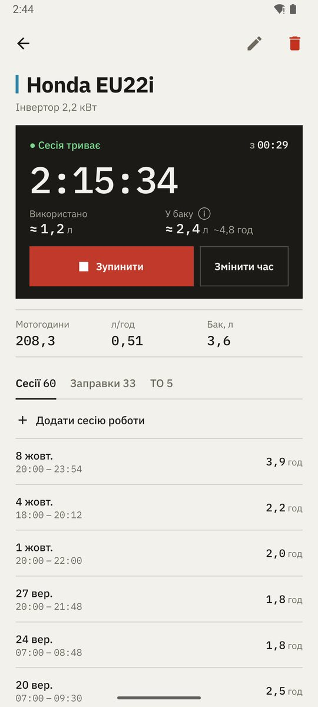
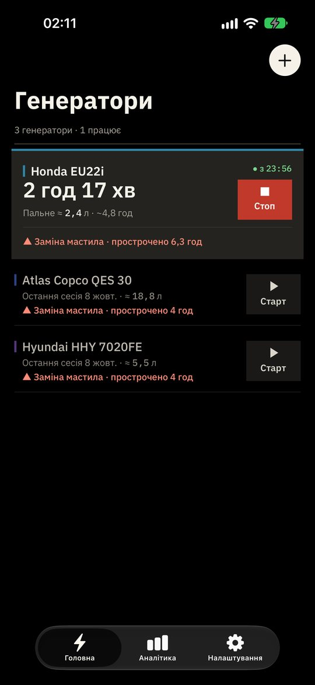
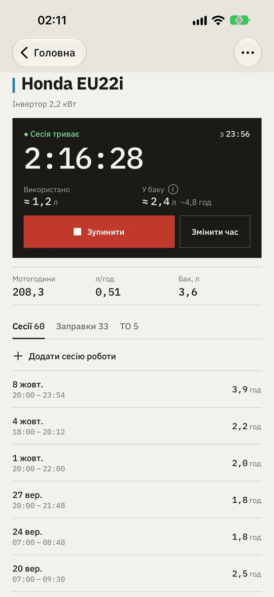
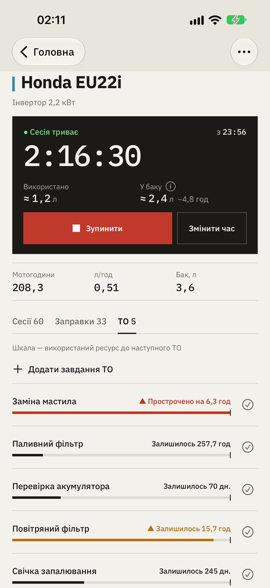
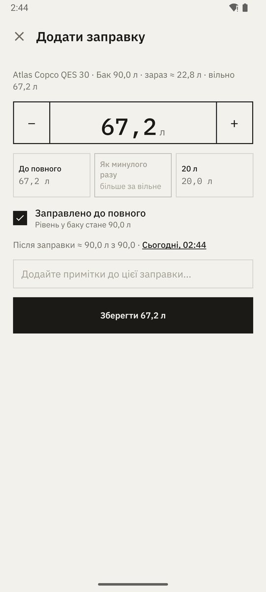
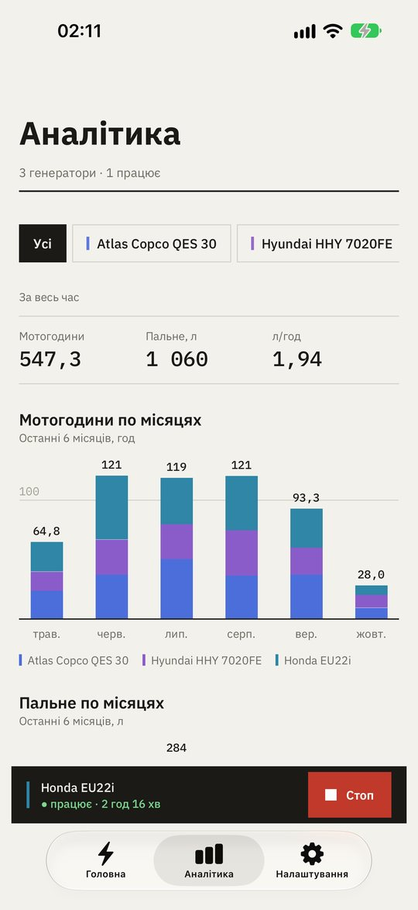
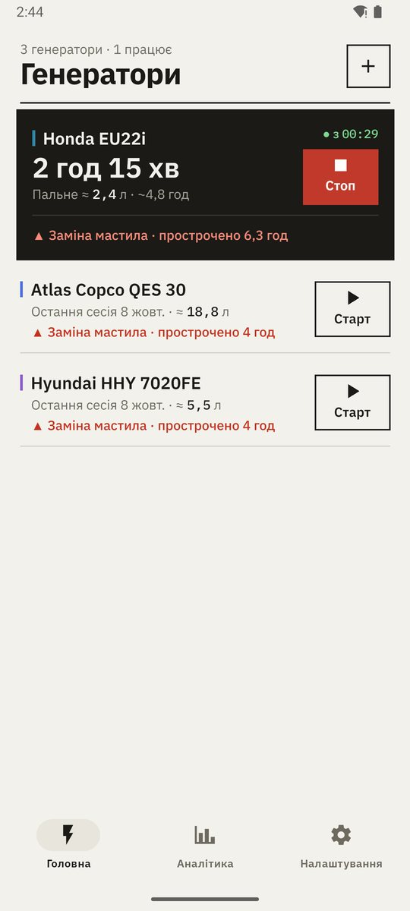
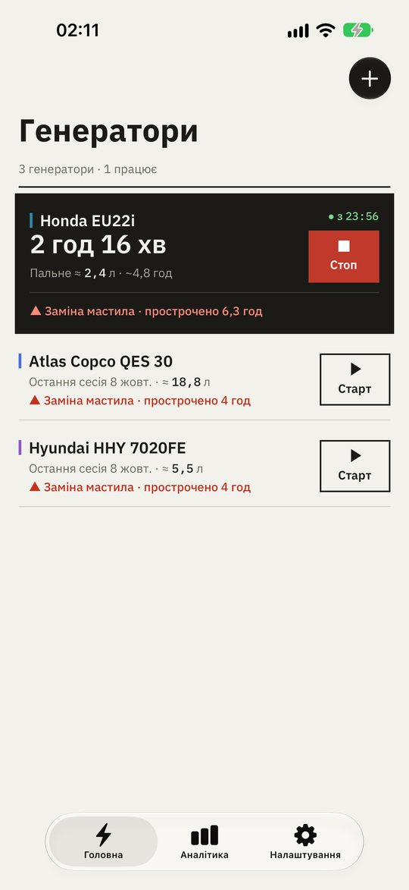

Старт і стоп з головного екрана
Генератори, що працюють, піднімаються вгору з живим таймером і великою кнопкою «Стоп», решта — нижче з кнопкою «Старт». Зупинили помилково? «Скасувати» поверне сесію з початковим часом.
Уже в Google Play та App Store
Запуск і зупинка генератора одним дотиком, залишок пального в баку й жодної пропущеної заміни мастила — для одного домашнього резервного генератора чи цілого парку. Працює офлайн. Синхронізується, лише якщо ви цього хочете.
Без реклами · Без стеження · Відкритий код


Можливості
Зникло світло — запустили генератор одним дотиком — стежите за ним — не пропускаєте ТО. Решту застосунок порахує сам.
Генератори, що працюють, піднімаються вгору з живим таймером і великою кнопкою «Стоп», решта — нижче з кнопкою «Старт». Зупинили помилково? «Скасувати» поверне сесію з початковим часом.
Вкажіть об'єм бака — і застосунок оцінює залишок за заправками й часом роботи: «≈ 2,4 л · ~4,8 год». Заправка — кілька дотиків: до повного, як минулого разу або кнопками ±.
Мотогодини й пальне по місяцях за пів року, з розбивкою за кольорами генераторів — бензин і дизель ніколи не складаються в один стовпчик, — плюс підсумки для кожного генератора.
Мастило, фільтри, свічки — інтервали в мотогодинах, днях або і те, і те. Кожне завдання показує, яку частину інтервалу вже використано, а прострочене ТО видно на головному екрані зі знаком ▲.
Від одного домашнього резервного генератора до прокатного парку. Кілька генераторів можуть працювати одночасно, а живий рядок тримає їх на відстані дотику на будь-якому екрані.
Увійдіть, щоб телефон і планшет показували одне й те саме. Зміни, зроблені офлайн, безпечно об'єднуються, щойно з'явиться зв'язок.
Світла тема кольору паперу, чорна тема для OLED і нічних відключень, а також підказка, як увімкнути системний червоний фільтр. Українська або англійська.
Як це працює
Без майстра налаштувань та інструкцій. Усе інше застосунок рахує сам.
Назва, модель, потужність. Один чи цілий парк — у кожного своя історія.
Натисніть «Старт» на головному екрані, коли зникло світло, і «Стоп», коли з'явилось. Витрачене пальне й мотогодини порахуються самі.
Задайте інтервали в мотогодинах або днях. Прострочене ТО позначено на головному екрані знаком ▲ — обслуговування буде до поломки, а не після.

Облік наживо
Живий годинник із секундами, витрачене й залишок пального, великі квадратні кнопки, у які легко влучити в темряві під час відключення чи в рукавицях на об'єкті. Забули натиснути? Час початку можна виправити пізніше.

Обслуговування
Кожне завдання рахує мотогодини й дні від останнього обслуговування і показує використану частину інтервалу смугою з позначкою межі. Прострочене й найближче ТО видно на головному екрані, виконане позначається одним дотиком.

Заправки
Готові варіанти «до повного» і «як минулого разу», кнопки ± для решти та рівень у баку після заправки. Повний бак калібрує оцінку, а застосунок підкаже, якщо вона була неточною.

Аналітика
Квадратні стовпчики по місяцях із розбивкою за кольорами генераторів, підсумки за весь час із літрами на годину і список по генераторах — для одного генератора чи для всіх разом.
Порівняння
Записати години можна будь-де. Різниця в тому, що з цими записами можна зробити потім.
| Що ви отримуєте | Паперовий журнал | Таблиця | |
|---|---|---|---|
| Працює без інтернету | Так | Частково | Так |
| Мотогодини додаються самі | Ні | Частково | Так |
| Витрата пального на годину | Ні | Частково | Так |
| Нагадування про ТО за годинами й днями | Ні | Ні | Так |
| Залишок пального й живий таймер | Ні | Ні | Так |
| Графіки по місяцях для кожного генератора | Ні | Частково | Так |
| Однакові дані на телефоні й планшеті | Ні | Так | Так |
Платформи
Не вебсторінка в обгортці. Material 3 на Android і нативний дизайн iOS — зокрема Liquid Glass — на iPhone та iPad.

Навігація Material 3, системні діалоги й темна тема. Телефони, планшети та складні смартфони.
Android 7.0 і новіші
Доступно в Google Play →
Нативні панелі навігації, форми SwiftUI, SF Symbols і Liquid Glass на iOS 26.
iOS та iPadOS 16.4 і новіші
Доступно в App Store →Приватність
Generator Tracker спершу зберігає все на вашому пристрої. Обліковий запис необов'язковий і потрібен лише для синхронізації ваших записів між вашими пристроями.
Політика конфіденційності →Кожен запис зберігається на пристрої; застосунком можна повністю користуватися без облікового запису й без зв'язку.
Жодних аналітичних SDK, рекламних ідентифікаторів і профілювання. Нічого не продається і не передається.
Увесь код — на GitHub під ліцензією MIT: будь-хто може перевірити, що робить застосунок.
Що нового
Generator Tracker 3.0 перероблено під те, що ви робите під час відключення: запустити генератор одним дотиком, стежити за ним і не пропустити ТО.
Питання
Ні. Жодної реклами, підписок і покупок у застосунку.
Так. Усе зберігається на пристрої й працює офлайн. Якщо ви ввійдете в обліковий запис, зміни синхронізуються автоматично, коли з'явиться зв'язок.
Телефони, планшети й складні смартфони на Android 7.0 і новіших; iPhone та iPad на iOS та iPadOS 16.4 і новіших.
Так, скільки завгодно. У кожного свої сесії, заправки, план ТО і статистика.
Дані, що зберігаються лише на телефоні, зникають, коли ви видаляєте їх у застосунку або видаляєте сам застосунок. Щоб видалити обліковий запис і все, що синхронізовано з хмарою, відкрийте Налаштування → Видалити обліковий запис; якщо застосунку вже немає, напишіть на yuri.valigursky@gmail.com. Подробиці — у політиці конфіденційності.
Українська та англійська. Застосунок бере мову пристрою, її можна змінити в налаштуваннях.
Так. Generator Tracker — відкритий проєкт під ліцензією MIT: увесь код, включно з цим сайтом, є на GitHub.
Офлайн і приватно. Встановлюється за хвилину.

Скануйте, щоб встановитиВідкриє Google Play або App Store — залежно від вашого телефона.